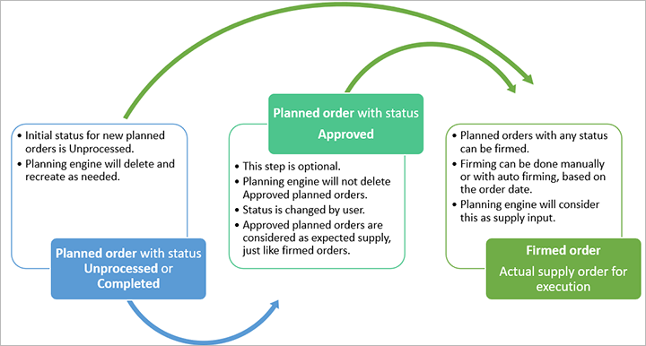

Bestellvorschläge genehmigen
Important
Dynamics 365 for Finance and Operations hat sich zu speziell entwickelten Anwendungen entwickelt, mit denen Sie bestimmte Geschäftsfunktionen verwalten können. Weitere Informationen zu diesen Änderungen finden Sie im Dynamics 365-Lizenzierungshandbuch.
Dieses Thema enthält Informationen zum Aktualisieren des Status von Planaufträgen in der Planungsoptimierung.
Beachten Sie, dass die Genehmigung von Planaufträgen ein optionaler Schritt ist, um aus einem Planauftrag einen festen Auftrag zu erstellen. Es wird empfohlen, geänderte Planaufträge zu genehmigen, da sonst die Änderungen beim nächsten Planungslauf ignoriert und überschrieben werden.

Das Status-Feld hilft Ihnen dabei, Ihren Fortschritt anhand der folgenden Werte zu steuern:
- Offen: Wenn vom Produktprogrammplanungslauf Bestellvorschläge generiert wurden, weisen die Bestellvorschläge den Status Offen auf. Planaufträge mit diesem Status werden beim nächsten Planungslauf gelöscht.
- Abgeschlossen: Wenn Sie einen Planauftrag nicht festlegen möchten, können Sie den Status in Abgeschlossen ändern , um anzuzeigen, dass Sie die Bewertung dieses geplanten Auftrags abgeschlossen haben. Beachten Sie, dass ein Status von Offen und Abgeschlossen vom System gleich behandelt wird.
- Genehmigt: Wenn Sie Änderungen beibehalten möchten oder eine geplante Bestellung festlegen möchten, ändern Sie den Status in Genehmigt. Planaufträge mit dem Status Genehmigt gelten als festgelegt und erwarten eine Lieferung von der Produktprogrammplanung, so dass sie bei einer späteren Ausführung der Produktprogrammplanung nicht geändert oder gelöscht werden. Um dies zu erreichen, kopiert die Planungslogik während der Produktplanung die genehmigten Planaufträge aus der alten Planversion in die neue Planversion. Beachten Sie, dass Genehmigte Planaufträge nur als Lieferung innerhalb der jeweiligen Produktprogrammplanung gelten.
Sie können Bestellvorschläge aus dem Arbeitsbereich Produktprogrammplanung, aus der Liste Bestellvorschlag, oder aus den Listen Geplante Produktionsaufträge, Geplante Einkaufsbestellungen und Geplante Umlagerung verwalten.